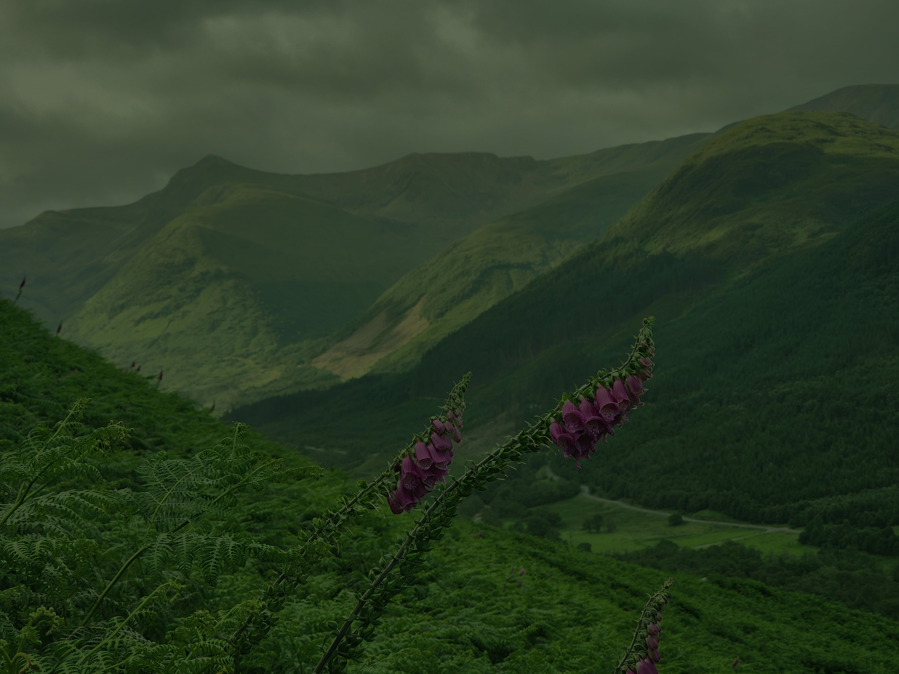
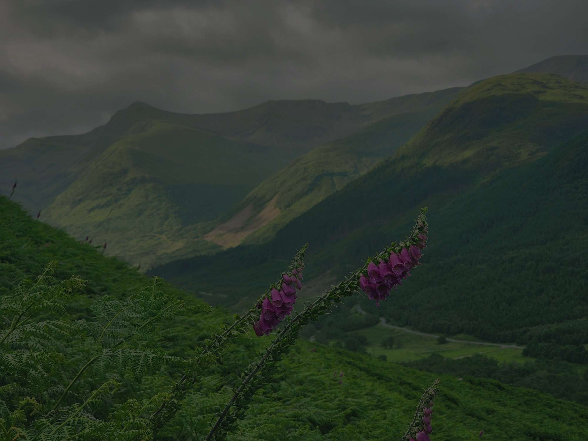
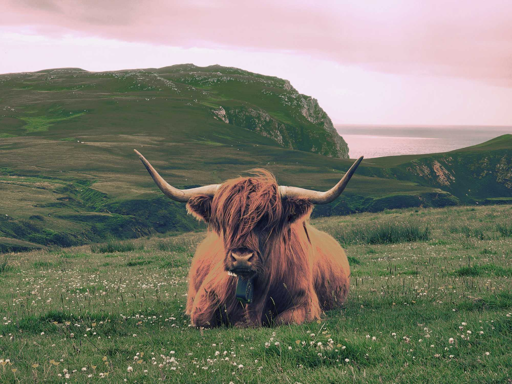
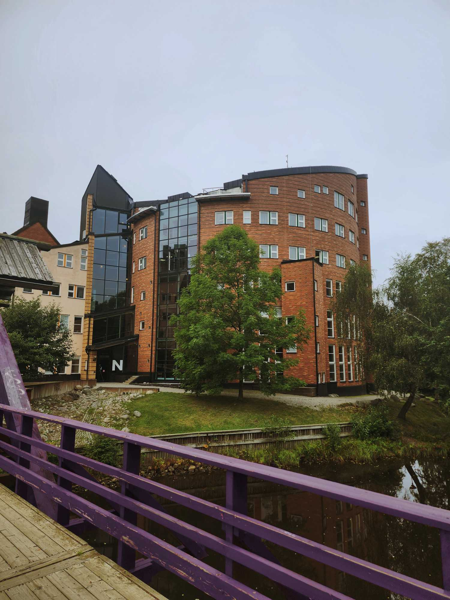

Original och redigerade bilder


I den origanala bilden (väster) kan vi se att hela bilden är grön. Det som ändras var färgerna och mättnad för att få det blåare och mer naturligt.


Denna bilden var ganska orange, fokuset var mest på saturation. Mättnaden togs ner och färgerna balanserades.
I andra bilden har jag tagit bort öronmärken och försök få det att se naturligt.


Här är bilden ganska gul och jag jobbade med mättnaden och färgerna för att det ska se naturligt ut.
PÅ andra bilden valde jag att ändra färger på bron till lila.